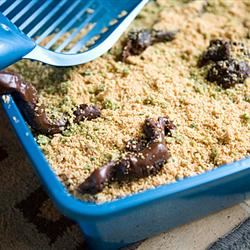

Kitty Litter Cake

Description
Overall, this recipe was a great effect. It really "grossed" everybody out, but it really was tasty. But it wasn't as realistic on the first try, so I made some changes to the recipe. First, I got rid of the chocolate cake mix and opted for another white mix. Then I used Oreo cookies instead of vanilla creams. I still used a few vanilla creams with the green food coloring mixed in. And lastly, I sprinkled the whole thing with powdered sugar to mimic the baking soda that lots of folks put in their litter boxes.
I "serve" this cake up every year for our Halloween Party, and will be doing so again this year! Props totally make the cake! I really go for the gross-out effect and roll some of the pooh in the cookie crumbles. Not the tastiest cake, but the effect is what does it. Got a great photo last year of my cat peeking into the pan (while everyone ran to keep her out!)! Thanks Dee for always making my Halloween Party a hit!
Ingredients
- 1 (18.25 ounce) package German chocolate cake mix
- 1 (18.25 ounce) package white cake mix
- 2 (3.5 ounce) packages instant vanilla pudding mix
- 1 (12 ounce) package vanilla sandwich cookies
- 3 drops green food coloring
- 1 (12 ounce) package tootsie rolls
Directions
- Prepare cake mixes and bake according to package directions (any size pan).
- Prepare pudding according to package directions and chill until ready to assemble.
- Crumble sandwich cookies in small batches in a food processor, scraping often. Set aside all but 1/4 cup. To the 1/4 cup add a few drops of green food coloring and mix.
- When cakes are cooled to room temperature, crumble them into a large bowl. Toss with 1/2 of the remaining cookie crumbs, and the chilled pudding. You probably won't need all of the pudding, you want the cake to be just moist, not soggy.
- Line kitty litter box with the kitty litter liner. Put cake mixture into box.
- Put half of the unwrapped tootsie rolls in a microwave safe dish and heat until softened. Shape the ends so that they are no longer blunt, and curve the tootsie rolls slightly. Bury tootsie rolls randomly in the cake and sprinkle with half of the remaining cookie crumbs. Sprinkle a small amount of the green colored cookie crumbs lightly over the top.
- Heat 3 or 4 of the tootsie rolls in the microwave until almost melted. Scrape them on top of the cake and sprinkle lightly with some of the green cookie crumbs. Heat the remaining tootsie rolls until pliable and shape as before. Spread all but one randomly over top of cake mixture. Sprinkle with any remaining cookie crumbs. Hang the remaining tootsie roll over side of litter box and sprinkle with a few green cookie crumbs. Serve with the pooper scooper for a gross Halloween dessert.